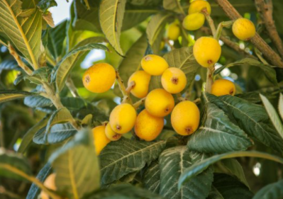
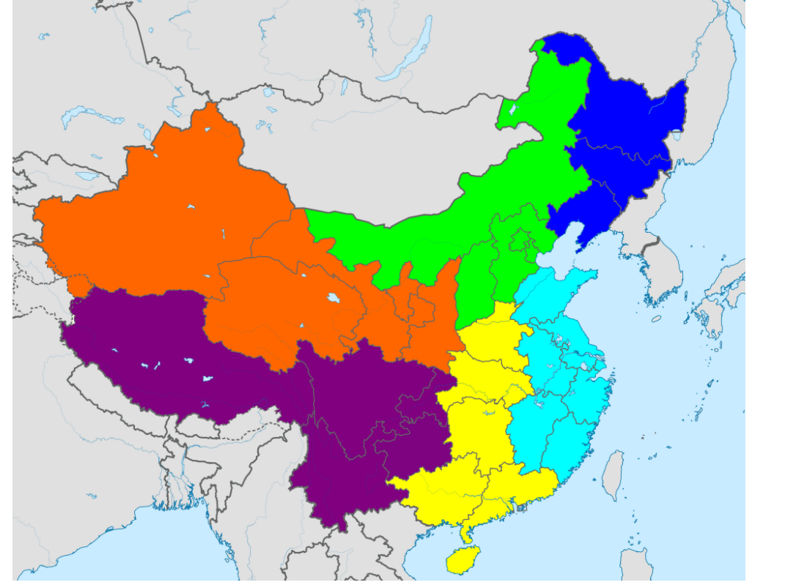

Ameixeira Amarela
Eriobotrya japonica
| Classificação Científica | |
|---|---|
| Reino: | Plantae |
| Divisão: | |
| Classe: | |
| Ordem: | Rosales |
| Família: | Rosaceae |
| Gênero: | Eriobotrya |
| Espécie: | E. japonica |
CARACTERÍSTICAS: É uma árvore pequena, com uma coroa circular e um tronco curto. Pode crescer até 10 m de altura, mas é geralmente menor. Suas folhas são alternadas, simples, de 10 a 25 cm, verde-escuras, de textura rígida e com a borda serrilhada.
DISTRIBUIÇÃO: Originária do Sudeste da China (Figura abaixo).
